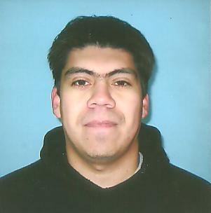

Nestor Leandro Urrutia
Informacion Personal
- Lugar y fecha de nacimiento: 24/12/1984 Bahia blanca
- Dirección: Araucanos 241
- teléfono/celular: 02914298700 / 02914810613
- E-mail: nurruti2014@gmail.com
- N°CUIL: 31439073
- Facebook: Nestor Urrutia
Formación Academica
- Estudios Primarios
Escuela Nicolas Avellaneda - Chiclana 851
- Estudios secundarios
Escuela de Enseñanza Media 6 (EEM6) - Vieytes 51
Título: Bachillerato en Economia y Gestion de las Organizaciones
Estado: Terminado
- Estudios Universitarios
UTN FRBB - 11 de Abril 461
Título: Ingenieria en Electrónica
Estado: En curso
Formación Complementaria
- Curso de programacion
Programación de interfaces gráficas y base de datos en VB.NET , programación lenguaje C/C++ y Arduino.
Institucion: CFP402
año:2017
- Curso de Armado y Reparacion de PC
Curso de armado, reparación de PC y configuracion de computadoras e instalacion de Redes
Institución: CFP UOM.
Año: 2016
- Curso de programacion Web
Institucion: comIT
año: 2018
Idiomas
- Ingles
Nivel: basico
- Italiano
nivel:basico
Experiencia Laboral
- Sur contact Center
Puesto: Atención Telefonica
año:2010-2013
- Impessa
Puesto: Limpieza
año:2013
- Tecnico de computadoras - independiente
Año: actual